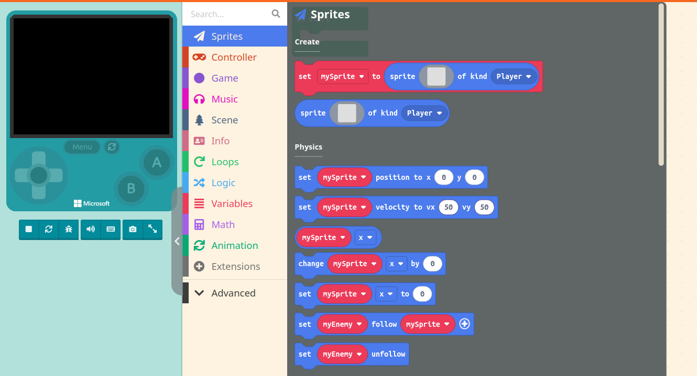

Introduction
This documentation is intended to guide you through using MakeCode Arcade to create a simple game. MakeCode Arcade is an online service designed to introduce beginner coders to game creation, allowing for users to work through Javascript code flows using code building blocks.
You will create a MakeCode Arcade account, and create a first project. Then, you will be guided through creating a player character and an enemy character, and setting up interactions between them. This will all be done using Javascript code blocks.
Intended Users
This documentation is mainly intended for beginner coders with little to no experience with code. For best experience, you should be interested in Javascript, as this documentation will primarily focus on that language.
Prerequisites
Knowledge
To best follow these instructions, you should:
- Have a basic idea of logic flow such as understanding that when an enemy overlaps with the player, they take damage.
- Have a basic understanding of code blocks and how to connect them, such as placing code functionality inside a trigger block.
Requirements
To best follow these instructions, you will need:
- A working computer with access to the internet.
- An email that can be used to create a MakeCode Arcade account.
Instructions Overview
These are the main topics focused on throughout this documentation. By the end of these instructions, you'll be able to complete each step.
Typographical Conventions
When looking through this documentation, there will be a few typographical conventions used to easily communicate to you what you need to do.
-
Screenshots: When being given an instruction that requires navigating to a specific part of the page, marked screenshots will be provided.

-
Code: While most code in MakeCode Arcade is formatted into blocks, on occasion raw code may be displayed for better understanding. Non-block code will be displayed like the example below.
function hello() { console.log("Hello, world!"); } hello(); -
Actions: When being given specific actions to complete, important words will be bolded like this.
-
Links: When being given an external link, text will be highlighted and clickable like the example below.
Admonitions
Through our documentation, various notification blocks will be used to quickly signal for information, warnings, or possible failures. Below are the main blocks that will be used, as well as what their purpose would be.
Success
This block is used to signify success, or when a task is successfully completed.
Info
This block is used to signify useful information, such as tips for you to follow. It can also be used when giving background context to a certain piece of code or software.
Warning
This block is used to signify warnings, such as when instructions become tricky or easy to misinterpret.